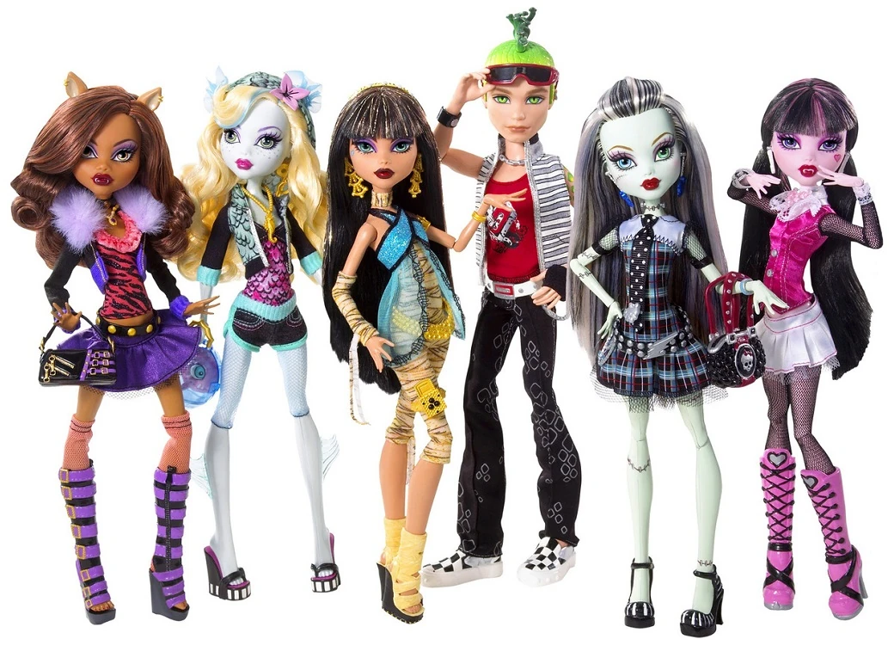
Las muñecas de Monster High capturan la esencia única de cada personaje, con un estilo gótico-glamuroso inconfundible. Cada detalle, desde su ropa hasta sus accesorios, refleja la personalidad y el linaje monstruoso de quien representan.
Nacidas en 2010 de la mano de Mattel, las muñecas Monster High revolucionaron el mercado del juguete al presentar a las hijas e hijos de los monstruos más famosos de la literatura y el cine —como Frankie Stein, Draculaura y Clawdeen Wolf— luciendo una estética gótica, alternativa y con estilo de alta costura. Rápidamente se convirtieron en un fenómeno cultural global gracias a su concepto innovador de empaque en forma de ataúd y sus detalladas articulaciones, pero sobre todo por su poderoso mensaje de inclusión y aceptación personal bajo el lema:
"Sé tú mismo, sé único, sé un monstruo🖤"
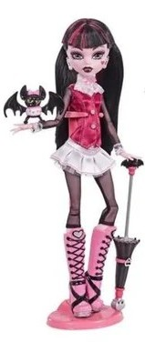
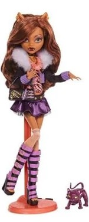
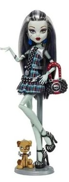
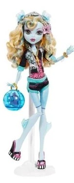
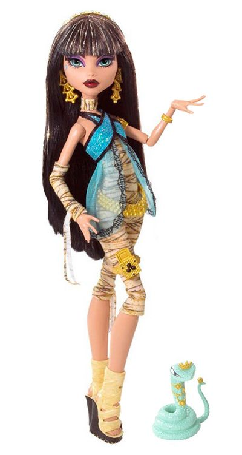
La era dorada e icónica. Lanzada con un marcado estilo gótico, cuerpos delgados y articulados, y un empaque distintivo en forma de ataúd. Sus personajes tenían facciones estilizadas y detalladas que cautivaron a coleccionistas y jóvenes, promoviendo el mensaje original de abrazar los "defectos imperfectos".
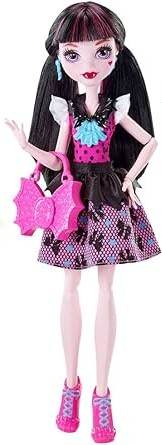
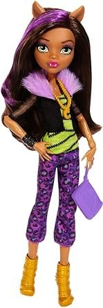
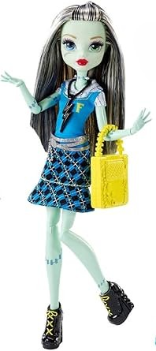
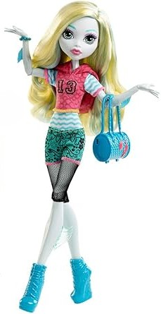
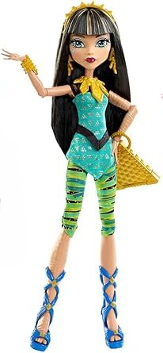
Conocida como el reboot o reinicio. Mattel suavizó el diseño de las muñecas para orientarlo a un público más infantil, utilizando rostros más amigables, ojos más grandes, menos articulaciones y moldes de cuerpo más sencillos. Perdió el toque sombrío original y tuvo una recepción dividida entre los fans.
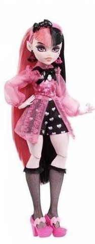
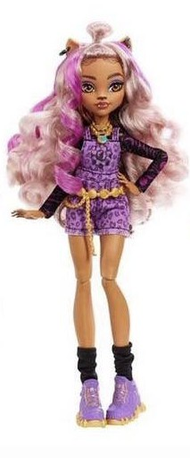
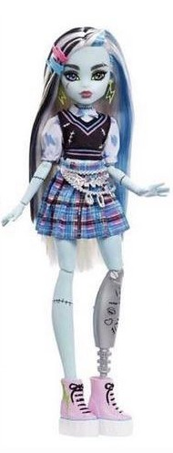
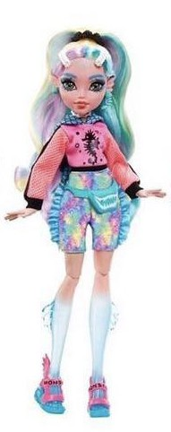
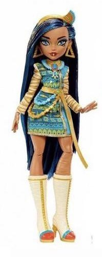
La era del regreso y la diversidad. Esta generación rediseñó por completo a los personajes con diferentes tipos de cuerpos (más altos, bajitos o curvis), moldes faciales variados y una estética moderna adaptada a las nuevas tendencias. Mantiene la esencia monstruosa, pero con una visión totalmente inclusiva y colorida.